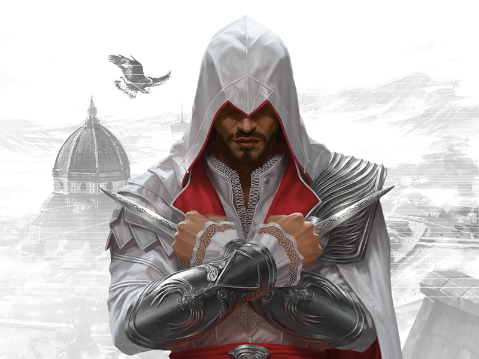

-
Assassin's Creed
Descrição
A premissa central da história envolve-se a partir da rivalidade entre duas sociedades secretas ancestrais: os Assassinos, que desejam a paz através do livre-arbítrio, e os Templários, que têm o objetivo de dominar o mundo e impor a ordem na humanidade. Ambos tiveram uma relação indireta com uma espécie que viveu antes dos humanos, cuja sociedade foi destruída por uma gigantesca tempestade solar. Misturando personagens e ficção histórica com eventos e figuras reais, a ordem cronológica dos jogos começa em 2012, e fala de Desmond Miles, um jovem que com a ajuda do Animus (uma máquina que permite ver as suas "memórias ancestrais"), explora as memórias de alguns dos mais proeminentes Assassinos da história.